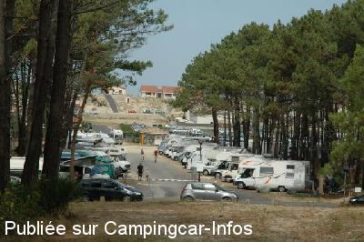
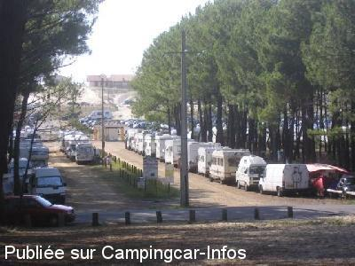
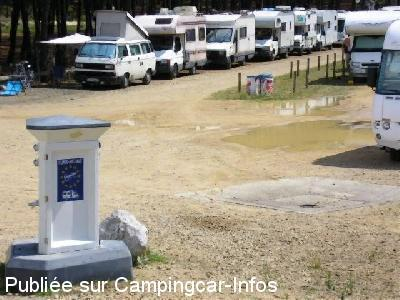

ASN = Aire de services avec stationnement nuit possible de :
CONTIS Contis Plage
(N° 762)
Accès/adresse :
Avenue du Phare
Contis-Plage
40170 CONTIS
Contis-Plage
40170 CONTIS
Latitude : (Nord) 44.09368° Décimaux ou 44° 5′ 37′′
Longitude : (Ouest) -1.32004° Décimaux ou -1° 19′ 12′′
Tarif : 2015
Stationnement, services : 9 à 13 €
Paiement par carte bancaire
Type de borne : RACLET
Services :


Tous commerces à proximité
Autres informations :
Ouvert toute l'année
76 emplacements
Stationnement limité 72 h
Tél : +33 (0)558 428 008
http://www.contis-plage.com

Le 03/08/2012 par Dann

Le 18/09/2006 par

Le 18/09/2006 par
de
philippedu62
le 26/08/2015 :
trés bon séjour a contis en aout 2015
trés belle aire de camping car et tres belle région
avec la plage juste derriere l'aire ,
( 13 euros ) y avons séjourné 7 jours , quelle repos
trés bon séjour a contis en aout 2015
trés belle aire de camping car et tres belle région
avec la plage juste derriere l'aire ,
( 13 euros ) y avons séjourné 7 jours , quelle repos
de
PR
le 06/08/2015 :
de passage en juillet 2015. Aire proche de la plage et saturé...
de passage en juillet 2015. Aire proche de la plage et saturé...
de
Ce joël
le 27/04/2015 :
§Bonjour, nous sommes actuellement sur cette aire quasi déserte seulement 5cc.
Les tarifs sont passés à 9€ en basse saison et 13€ en haute saison.
Lorsque cette aire est chargée il n'y a pas suffisamment de bornes électriques d'où les affichettes qui recommandent de rester branche qu'une heure max.
A cette période Contes plage est très très calme 😃
§Bonjour, nous sommes actuellement sur cette aire quasi déserte seulement 5cc.
Les tarifs sont passés à 9€ en basse saison et 13€ en haute saison.
Lorsque cette aire est chargée il n'y a pas suffisamment de bornes électriques d'où les affichettes qui recommandent de rester branche qu'une heure max.
A cette période Contes plage est très très calme 😃
de
justinou (64)
le 28/04/2013 :
Cette aire est bien pratique hors saison car peu fréquentée et gratuite.Nous y étions en février 2013.
nous ne la testerons pas en été.
Cette aire est bien pratique hors saison car peu fréquentée et gratuite.Nous y étions en février 2013.
nous ne la testerons pas en été.
de
Djy36
le 21/05/2012 :
Nous revenons des Landes et nous sommes arrétés à Contis. Aire agréable, stationnement en épi, stationnement payant par 24 heures avec possibilité de ressortir grâce à un code.
Nous revenons des Landes et nous sommes arrétés à Contis. Aire agréable, stationnement en épi, stationnement payant par 24 heures avec possibilité de ressortir grâce à un code.
de
Leclerc Cédric
le 30/06/2011 :
de passage sur cette air le 27juin, je n'est absolument rien a redire, tout nouveaux dans le monde du camping carisme sa a était notre bapteme. tres calme, vidage super pratique ( du moins pour notre Cc ) des point d'eau et borne elec partout, kelke commerce de proxiité a 200m. le pied.
le seul hic ce serais les piste cyclable autour du parking qui laice sérieusement a désiré.
de passage sur cette air le 27juin, je n'est absolument rien a redire, tout nouveaux dans le monde du camping carisme sa a était notre bapteme. tres calme, vidage super pratique ( du moins pour notre Cc ) des point d'eau et borne elec partout, kelke commerce de proxiité a 200m. le pied.
le seul hic ce serais les piste cyclable autour du parking qui laice sérieusement a désiré.
de
lou
le 17/05/2011 :
§
Landais et amoureux de la côte sauvage, nous adorons Contis qui est resté typique et non urbaniser comme bon nombre d'endroits sur la côte.
Voilà les nouveautés 2011 qui prendront effet au 1er juin.
L'aire de campings cars pourra accueillir jusqu'à 76 campings cars. Le stationnement est limité à 72h (3 nuits), les tarifs sont de 11h/nuit en juin, juillet, août et septembre, 7€/nuit en octobre, novembre, mars, avril et mai, gratuit en décembre, janvier et février. Le règlement se fait uniquement par Carte bancaire. Eau et électricité sont compris dans le tarif. Le point de vidange ne sera pas modifié.
ceci est une très bonne nouvelle pour l'endroit, l'anarchie des gens qui partaient tôt le matin pour ne pas payer, les gens qui s'installaient pour 1 semaine et plus et qui prenaient plusieurs places.
merci la commune.
§
Landais et amoureux de la côte sauvage, nous adorons Contis qui est resté typique et non urbaniser comme bon nombre d'endroits sur la côte.
Voilà les nouveautés 2011 qui prendront effet au 1er juin.
L'aire de campings cars pourra accueillir jusqu'à 76 campings cars. Le stationnement est limité à 72h (3 nuits), les tarifs sont de 11h/nuit en juin, juillet, août et septembre, 7€/nuit en octobre, novembre, mars, avril et mai, gratuit en décembre, janvier et février. Le règlement se fait uniquement par Carte bancaire. Eau et électricité sont compris dans le tarif. Le point de vidange ne sera pas modifié.
ceci est une très bonne nouvelle pour l'endroit, l'anarchie des gens qui partaient tôt le matin pour ne pas payer, les gens qui s'installaient pour 1 semaine et plus et qui prenaient plusieurs places.
merci la commune.
de
eric marquet
le 15/05/2010 :
Bonjour. Nous avons trouvé cette aire pas très sympa avec un stationnement anarchique et un village très triste et sale.
Bonjour. Nous avons trouvé cette aire pas très sympa avec un stationnement anarchique et un village très triste et sale.
de
thierry.lavenan Thierry022
le 25/07/2009 :
Bonjour. De passage 1ère quinzaine de juillet, rien de nouveau pour cette aire. Toujours aussi bien placée entre nature, plage et commerces.
Bonjour. De passage 1ère quinzaine de juillet, rien de nouveau pour cette aire. Toujours aussi bien placée entre nature, plage et commerces.
de
steph49
le 27/02/2008 :
Aire très calme, pas de service à cette époque sauf vidange eaux grises et noires, village désert mais idéal pour se reposer.
Aire très calme, pas de service à cette époque sauf vidange eaux grises et noires, village désert mais idéal pour se reposer.
de
Lavenan Thierry
le 27/11/2007 :
Aire acceptable si vous vous garez le long du chemin d'accès (voir photo).
Aire acceptable si vous vous garez le long du chemin d'accès (voir photo).
de
campingcar.jjbo.freesurf.fr
le 18/09/2006 :
Aire de Saint Julien en Born / Contis Plage : 8€ pour 24 heures, vidanges gratuites pratiques, borne RACLET 2 € pour le plein d'eau. Cette aire est juste derrière la dune à 100 mètres à pied de la plage de sable fin (baignade à 20° mais vagues assez fortes le 17 Août). Vaut le détour.
Aire de Saint Julien en Born / Contis Plage : 8€ pour 24 heures, vidanges gratuites pratiques, borne RACLET 2 € pour le plein d'eau. Cette aire est juste derrière la dune à 100 mètres à pied de la plage de sable fin (baignade à 20° mais vagues assez fortes le 17 Août). Vaut le détour.